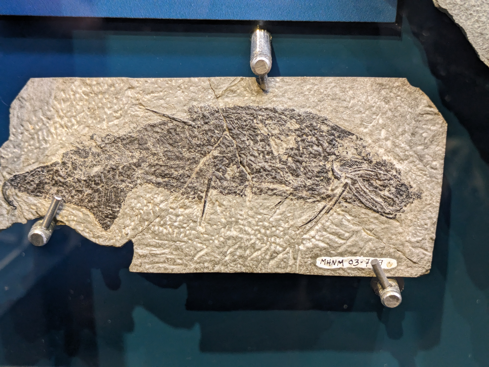

I am Richard Dearden, a palaeobiologist interested in the the early evolution of vertebrates, in particular cartilaginous fishes (sharks, rays, and chimaeras). At the moment I am postdoc at the University of Birmingham.
This website gives an overview of me and my research, as well as more details on the Marie Skłodowska-Curie Action that I recently finished, DEADSharks.
